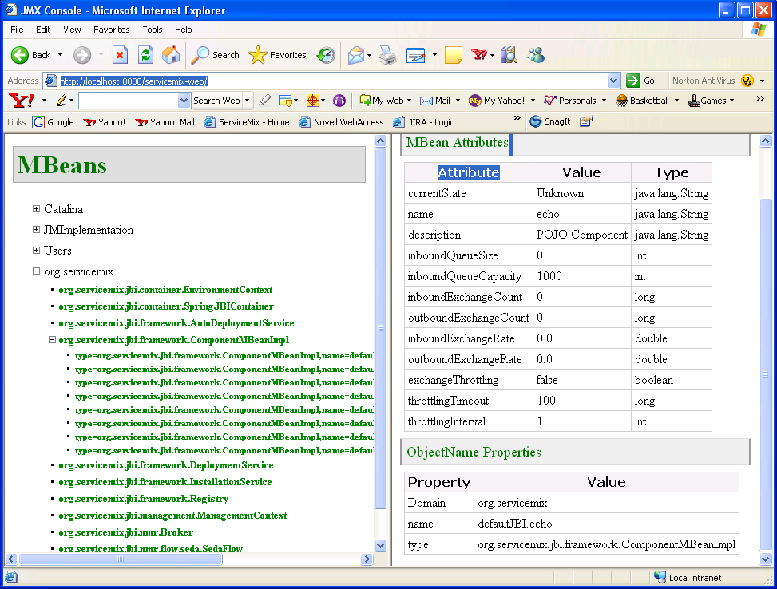

Using a JMX Console with ServiceMix
This document explains how to connect a JMX Console to ServiceMix. The following three open source JMX Consoles will be discussed:
- JConsole
- MC4J
- ServiceMix JMX Console
 | JMX Connector URI has changed for version 3.x!
ServiceMix will now use the jndiPath = jmxrmi
e.g. service:jmx:rmi:///jndi/rmi://localhost:1099/jmxrmi |
The ServiceMix JBIContainer exposes internal services and Components through JMX. The JBIContainer can be passed as a JMXBeanServer or, it can be configured to create one if one doesn't exist (see Configuration). If the JBIContainer creates its own MBeanServer instance, it also creates an RMI JMXConnector - to allow remote connections. The Ant Tasks use the following:
String jndiPath = "jmxrmi";
JMXServiceURL url = new JMXServiceURL ("service:jmx:rmi: + jndiPath) ;
JMXConnector connector = JMXConnectorFactory.connect(url);
The following configuration variables are required for the next sections.
NOTE: The values shown are the default settings for ServiceMix version 3.x
 | Default Settings
The default namingPort is 1099
The default container name is jmxrmi
The JMX Service URL is: service:jmx:rmi:///jndi/rmi://localhost:1099/jmxrmi |
NOTE: The values shown are the default settings for ServiceMix version 2.x
| Default Settings
The default namingPort is 1099
The default container name is defaultJBI
The JMX Service URL is: service:jmx:rmi:///jndi/rmi://localhost:1099/defaultJBIJMX |
Troubleshooting
In case you cannot connect to the address printed in the ServiceMix console output and find in the JConsole console output some error like
you may have not provided the required username and password (default: smx / smx). These credentials are configurated in /conf/jmx.xml and can be deactivated (search in jmx.xml for Comment the following lines to disable JAAS authentication for jmx) which of course poses the usual security issues (no protection at all). The default setting is to delegate the credentials to JAAS, which is configured in conf/login.properties useing the properties file at /conf/groups.properties and conf/users-credentials.properties and conf/users-passwords.properties.
Using JConsole
The Java-2 Platform, Standard Edition (J2SE) 5.0 release includes a JMX monitoring tool, JConsole. JConsole monitors applications running on the Java platform and provides information on their performance and resource consumption. Please see Sun's documentation for more information on using this tool. Please see the following sections for instructions on configuring and using JConsole with ServiceMix.
documentation for more information on using this tool. Please see the following sections for instructions on configuring and using JConsole with ServiceMix.
NOTE: This tool is available with the Java 5 release only.
How to Connect JConsole to Monitor ServiceMix
This section explains how to configure JConsole to monitor ServiceMix. The ServiceMix port number, the ServiceMix container id, and the JMX Service URL will be required. This information was specified in the previous section, in the Default Settings box.
- ServiceMix should be running first. Please see the Getting Started guide for instructions on running ServiceMix.
- Start JConsole from a command shell. The JConsole executable can be found in the bin directory of the J2SE installation directory.
cd [J2SE_install_dir]\bin
jconsole
The JConsole window will appear.
- Click on the "Advanced" tab. The following URL must be entered in the "JMX URL" box: service:jmx:rmi:///jndi/rmi://hostname:port/app_to_monitor. Where the hostname is name of the host on which the application to be monitored is running, the port is the port number to connect to the application, and the app_to_monitor is the JMX enabled application to monitor. For example, if none of the defaults for ServiceMix have been modified and ServiceMix is running on localhost, enter the following: service:jmx:rmi:///jndi/rmi://localhost:1099/defaultJBIJMX.

- Click the Connect box to connect to the ServiceMix container. org.servicemix will be visible in the console. Click on org.servicemix to see its MBeans.

Testing JConsole with ServiceMix
- To see JConsole in action, start one of the ServiceMix examples running, for instance, the Basic Example:
cd [servicemix_install_dir]\examples\basic
..\..\bin\servicemix servicemix.xml
where servicemix_install_dir is the directory in which ServiceMix was installed.
- Run JConsole (see the previous section) and click on org.servicemix.
- Click on org.servicemix.jbi.framework.ComponentMBeanImpl. The components of the Basic example will be shown. Clicking on any of them will show the monitoring information available.

Using MC4J
MC4J is a JMX Console. It can connect to J2EE servers, MBeans, and other applications to monitor them.
How to Connect MC4J to Monitor ServiceMix
This section explains how to configure MC4J to monitor ServiceMix. The ServiceMix port number, the ServiceMix container id, and the JMX Service URL will be required. This information was specified in a previous section in the Default Settings box. The server connection type will also be required - it is JSR160.
- ServiceMix should be running first. Please see the Getting Started guide for instructions on running ServiceMix.
- Click on the MC4J executable MC4J Console 1.2b9.exe (for Windows) to start MC4J. The executable can be found in the top-level directory of the MC4J installation. The MC4J window will appear.
- Select "Management>Create Server Connection..." from the menu. This will start "My Wizard". The connection to ServiceMix can be created using the wizard.

- Enter the following into the text boxes/pull-down menus:
Select your server connection type: JSR160
Name: This can any name, for example, ServiceMix
Server URL: service:jmx:rmi:///jndi/rmi://localhost:1099/defaultJBIJMX
The Server URL is service:jmx:rmi:///jndi/rmi://hostname:port/app_to_monitor. Where the hostname is name of the host on which the application to be monitored is running, the port is the port number to connect to the application, and the app_to_monitor is the JMX-enabled application to monitor. For example, if none of the defaults for ServiceMix have been modified and ServiceMix is running on localhost, enter the following: service:jmx:rmi:///jndi/rmi://localhost:1099/defaultJBIJMX.
- Accept the defaults for the rest of the fields in the Wizard.
- Click "Next."
- Click "Finish" in the next window.
A connection to ServiceMix has been added to MC4J!

Testing MC4J with ServiceMix
- To see MC4J in action, start one of the ServiceMix examples running, for instance, the file binding Example:
cd [servicemix_install_dir]\examples\file-binding
..\..\bin\servicemix servicemix.xml
where servicemix_install_dir is the directory in which ServiceMix was installed.
- Run MC4J (see the previous section) and click on org.servicemix.
- Click on org.servicemix.jbi.framework.ComponentMBeanImpl. The components of the File Binding example will be shown. Right-click on a component and select "Available dashboards...>Basic MBean View" to see the information shown in the diagram below. For more details on using MC4J, please see the MC4J documentation.

ServiceMix JMX Console
ServiceMix includes a simple JMX operational console. A ServiceMix WAR file can be created and deployed inside any Servlet / J2EE application server in a standard deployment unit. The benefit of the ServiceMix WAR file is that it includes a JMX Console that allows a web browser to be used to view JMX attributes and statistics.
Starting the ServiceMix JMX Console
To create the ServiceMix WAR file from a source download of ServiceMix do the following:
- Download and build the ServiceMix source code. Please see the Getting Started guide for instructions.
- Create the WAR file:
cd [servicemix_install_dir]\tooling\servicemix-web
maven war
where servicemix_install_dir is the directory to which ServiceMix was downloaded.
- Deploy the WAR file into any servlet engine. Instructions for deploying ServiceMix on Tomcat, JBoss, and Geronimo can be found at the following links:
- Run the ServiceMix JMX Console. To do this enter the following URL in a web browser: http://localhost:8080/servicemix-web. You will see the following:

Using the ServiceMix JMX Console
For examples of how to use the ServiceMix JMX Console, please see War Deployment.
Related Documentation